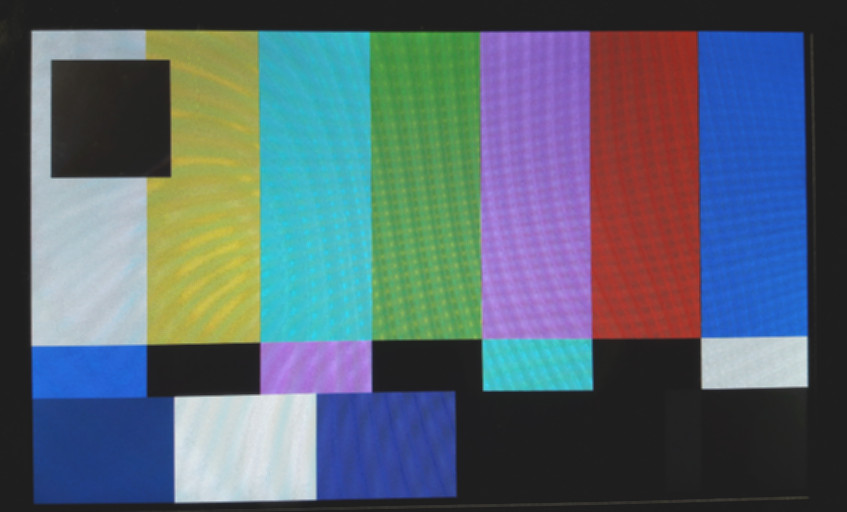

How to use the Atmel KMS/DRM LCD driver
Introduction
Since linux-3.18-at91, the recent Atmel SoCs have a new LCD driver that is based on the Linux KMS/DRM sub-system. As the old fbdev (framebuffer) subsystem is being deprecated and is certainly limited, we decided to move to a more future proof infrastructure. This driver can be found in the drivers/gpu/drm/atmel-hlcdc/ directoryThe atmel-hlcdc driver
A good introduction to this driver by its author is the paper that Boris Brezillon wrote for Embedded Linux Conference Europe 2014: The DRM/KMS subsystem from a newbie's point of view- base layer
- overlays (planes in DRM words)
- alpha channel blending of overlays
- color space conversion: RGB (different formats), YUV (different formats as well)
- panning
- rotation
- scaling / upsampling
- hardware cursor (when supported by hardware)
Using modetest
Modetest is the testing tool for a DRM driver. It uses native DRM commands.modetest output
Example on a SAMA5D4-EK with an HDMI monitor connected.
root@sama5d4ek:~# ./modetest
trying to open device 'i915'...failed.
trying to open device 'radeon'...failed.
trying to open device 'nouveau'...failed.
trying to open device 'vmwgfx'...failed.
trying to open device 'omapdrm'...failed.
trying to open device 'exynos'...failed.
trying to open device 'tilcdc'...failed.
trying to open device 'msm'...failed.
trying to open device 'sti'...failed.
trying to open device 'tegra'...failed.
trying to open device 'imx-drm'...failed.
trying to open device 'atmel-hlcdc'...success.
Raw EDID:
ff ff ff ff ff ff 00 10 ac 42 f0 53 33 37 43 20
17 01 03 80 2f 1e 78 ea 23 c5 a5 57 4f 9e 26 0f
50 54 a5 4b 00 71 4f 81 80 b3 00 01 01 01 01 01
01 01 01 01 01 21 39 90 30 62 1a 27 40 68 b0 36
00 d9 28 11 00 00 1c 00 00 00 ff 00 34 34 46 47
59 33 38 38 43 37 33 53 0a 00 00 00 fc 00 44 45
4c 4c 20 50 32 32 31 33 0a 20 20 00 00 00 fd 00
38 4b 1e 53 10 00 0a 20 20 20 20 20 20 00 b9 0e
Encoders:
id crtc type possible crtcs possible clones
5 15 TMDS 0x00000001 0x00000000
7 0 LVDS 0x00000001 0x00000000
Connectors:
id encoder status type size (mm) modes encoders
6 5 connected HDMI-A 470x300 11 5
modes:
name refresh (Hz) hdisp hss hse htot vdisp vss vse vtot)
1680x1050 60 1680 1784 1960 2240 1050 1053 1059 1089 flags: nhsync, pvsync; type: preferred, driver
1280x1024 75 1280 1296 1440 1688 1024 1025 1028 1066 flags: phsync, pvsync; type: driver
1280x1024 60 1280 1328 1440 1688 1024 1025 1028 1066 flags: phsync, pvsync; type: driver
1152x864 75 1152 1216 1344 1600 864 865 868 900 flags: phsync, pvsync; type: driver
1024x768 75 1024 1040 1136 1312 768 769 772 800 flags: phsync, pvsync; type: driver
1024x768 60 1024 1048 1184 1344 768 771 777 806 flags: nhsync, nvsync; type: driver
800x600 75 800 816 896 1056 600 601 604 625 flags: phsync, pvsync; type: driver
800x600 60 800 840 968 1056 600 601 605 628 flags: phsync, pvsync; type: driver
640x480 75 640 656 720 840 480 481 484 500 flags: nhsync, nvsync; type: driver
640x480 60 640 656 752 800 480 490 492 525 flags: nhsync, nvsync; type: driver
720x400 70 720 738 846 900 400 412 414 449 flags: nhsync, pvsync; type: driver
props:
1 EDID:
flags: immutable blob
blobs:
value:
00ffffffffffff0010ac42f053333743
20170103802f1e78ea23c5a5574f9e26
0f5054a54b00714f8180b30001010101
01010101010121399030621a274068b0
3600d9281100001c000000ff00343446
4759333838433733530a000000fc0044
454c4c2050323231330a2020000000fd
00384b1e5310000a20202020202000b9
2 DPMS:
flags: enum
enums: On=0 Standby=1 Suspend=2 Off=3
value: 0
8 0 connected LVDS 152x91 1 7
modes:
name refresh (Hz) hdisp hss hse htot vdisp vss vse vtot)
800x480 60 800 801 865 929 480 481 504 526 flags: ; type:
props:
1 EDID:
flags: immutable blob
blobs:
value:
2 DPMS:
flags: enum
enums: On=0 Standby=1 Suspend=2 Off=3
value: 0
CRTCs:
id fb pos size
15 31 (0,0) (1680x1050)
1680x1050 60 1680 1784 1960 2240 1050 1053 1059 1089 flags: nhsync, pvsync; type: preferred, driver
props:
Planes:
id crtc fb CRTC x,y x,y gamma size possible crtcs
11 15 31 0,0 0,0 0 0x00000001
formats: XR12 AR12 RA12 AR15 RG16 RG24 XR24 AR24 RA24
props:
4 type:
flags: immutable enum
enums: Overlay=0 Primary=1 Cursor=2
value: 1
10 rotation:
flags: bitmask
values: rotate-0=0x1 rotate-90=0x2 rotate-180=0x4 rotate-270=0x8
value: 1
12 0 0 0,0 0,0 0 0x00000001
formats: XR12 AR12 RA12 AR15 RG16 RG24 XR24 AR24 RA24
props:
4 type:
flags: immutable enum
enums: Overlay=0 Primary=1 Cursor=2
value: 0
9 alpha:
flags: range
values: 0 255
value: 255
10 rotation:
flags: bitmask
values: rotate-0=0x1 rotate-90=0x2 rotate-180=0x4 rotate-270=0x8
value: 1
13 0 0 0,0 0,0 0 0x00000001
formats: XR12 AR12 RA12 AR15 RG16 RG24 XR24 AR24 RA24
props:
4 type:
flags: immutable enum
enums: Overlay=0 Primary=1 Cursor=2
value: 0
9 alpha:
flags: range
values: 0 255
value: 255
10 rotation:
flags: bitmask
values: rotate-0=0x1 rotate-90=0x2 rotate-180=0x4 rotate-270=0x8
value: 1
14 0 0 0,0 0,0 0 0x00000001
formats: XR12 AR12 RA12 AR15 RG16 RG24 XR24 AR24 RA24 AYUV YUYV UYVY YVYU VYUY NV21 NV61 YU16 YU12
props:
4 type:
flags: immutable enum
enums: Overlay=0 Primary=1 Cursor=2
value: 0
9 alpha:
flags: range
values: 0 255
value: 255
10 rotation:
flags: bitmask
values: rotate-0=0x1 rotate-90=0x2 rotate-180=0x4 rotate-270=0x8
value: 1
Frame buffers:
id size pitch
Some modetest commands
Here are some useful commands: Display a basic test pattern with selected geometry (Don't press "enter" again until you're done) on the HDMI monitor:modetest -M atmel-hlcdc -s 6@15:1024x768Larger resolution if the HDMI connected monitor supports it:
modetest -M atmel-hlcdc -s 6@15:1680x1050Now same test patern on the LCD PDA 7" display:
modetest -M atmel-hlcdc -s 8@15:800x480or (if the HDMI cable is not connected):
modetest -M atmel-hlcdc -s 6@14:800x480A test patern for background + a 300x200 overlay at 150 and 50 location:
modetest -M atmel-hlcdc -s 8@15:800x480 -P 15:300x200+150+50 Here is the output of this last command (HDMI screen unplugged):
root@sama5d4ek:~# modetest -M atmel-hlcdc -s 8@15:800x480 -P 15:300x200+150+50 setting mode 800x480@XR24 on connectors 8, crtc 15 testing 300x200@XR24 overlay plane 12PDA 4" on sama5d2:
modetest -M atmel-hlcdc -s 6@13:480x272
DRM Library
The different features are supported and accessible in the Linux kernel. The constrain is to use the libdrm to access them and the proper call to our KMS/DRM driver named atmel-hlcdc. Note that these feature are not reachable using the fbdev emulation. Here are some two more links detailing simple use cases:- https://dvdhrm.wordpress.com/2012/09/13/linux-drm-mode-setting-api/

- https://dvdhrm.wordpress.com/2012/12/21/advanced-drm-mode-setting-api/
Adapt to a new LCD panel
Panel definitions are stored in C code and called from DT by the simple-panel. So, you can store your panel definition here: drivers/gpu/drm/panel/panel-simple.c Here is an example of the definition structure for the PDA 4.3" equipped with a Innolux at043tn24 LCD. The geometry is thus described like this:
static const struct drm_display_mode innolux_at043tn24_mode = {
.clock = 9000,
.hdisplay = 480,
.hsync_start = 480 + 2,
.hsync_end = 480 + 2 + 41,
.htotal = 480 + 2 + 41 + 2,
.vdisplay = 272,
.vsync_start = 272 + 2,
.vsync_end = 272 + 2 + 11,
.vtotal = 272 + 2 + 11 + 2,
.vrefresh = 60,
.flags = DRM_MODE_FLAG_NHSYNC | DRM_MODE_FLAG_NVSYNC,
};
static const struct panel_desc innolux_at043tn24 = {
.modes = &innolux_at043tn24_mode,
.num_modes = 1,
.bpc = 8,
.size = {
.width = 95,
.height = 54,
},
.bus_format = MEDIA_BUS_FMT_RGB888_1X24,
};
[..]
static const struct of_device_id platform_of_match[] = {
{
[..]
}, {
.compatible = "innolux,at043tn24",
.data = &innolux_at043tn24,
}, {
[..]
}, {
/* sentinel */
}
};
MODULE_DEVICE_TABLE(of, platform_of_match);
And here is the DT description that links to this panel:
panel: panel {
compatible = "innolux,at043tn24", "simple-panel";
backlight = <&backlight>;
power-supply = <&panel_reg>;
#address-cells = <1>;
#size-cells = <0>;
status = "okay";
port@0 {
reg = <0>;
#address-cells = <1>;
#size-cells = <0>;
panel_input: endpoint@0 {
reg = <0>;
remote-endpoint = <&hlcdc_panel_output>;
};
};
};
Use of the legacy fbdev emulation
For DRM drivers, you can use the old fbdev emulation. It is somehow a temporary workaround for software that still uses the fbdev interface. The preferred way of taking advantage of this driver is to use the DRM kernel API. Anyway, if you still need this emulated fbdev interface, you can use the following instructions.Choose supported modes
By default, the fbdev emulation on top of DRM driver is in 24 bits (RGB888).For changing the the fbdev emulation color mode to 16 bits (RGB565) on top of DRM driver, you must choose the mode at boot time on the Linux command line. So, you can add to the cmdline: for PDA7" 16 bits color mode:
video=Unknown-1:800x480-16or for PDA4.3" 16 bits color mode:
video=Unknown-1:480x272-16For HDMI, here are some tricks as we have 2 different connectors: For HDMI only: disable LCD:
video=HDMI-A-1:800x600-16 video=Unknown-1:dFor only screen and disabling HDMI output if it's connected:
video=HDMI-A-1:d video=Unknown-1:800x480-16
Set mode before using the fbdev
For fbdev emulation of DRM drivers, we must set the mode the fb0 need to use. Example for/dev/fb0 and PDA7" LCD screen:
echo U:800x480p-0 > /sys/class/graphics/fb0/modeor for
/dev/fb0 and PDA4.3" LCD screen:
echo U:480x272p-0 > /sys/class/graphics/fb0/modeNote that you can check available modes in the file:
$ cat /sys/class/graphics/fb0/modes U:480x272p-0The easies way to do so is to run:
head -1 /sys/class/graphics/fb0/modes > /sys/class/graphics/fb0/modeYou can also use fbset:
fbset -g 800 480 800 480 16You may also need to disable the blanking of the LCD:
echo 0 > /sys/class/graphics/fb0/blank
| WebFaqBaseForm | |
|---|---|
| Boards | Sam9x60EK, Sama5d27WLSom1EK, Sama5d27Som1EK, Sama5d2PtcEK, Sama5d2Xplained, Sama5d4Xplained, Sama5d4ek, Sama5d3Xplained, Sama5d3xek |
| Components | Kernel, linux-3.18-at91, linux-4.1-at91, linux-4.4-at91, linux-4.9-at91, linux-4.14-at91, linux-4.19-at91, linux-5.4-at91 |
| Summary | Using Atmel KMS/DRM LCD driver |


| I | Attachment | Action | Size | Date | Who | Comment |
|---|---|---|---|---|---|---|
| |
modetest_overlay.jpg | manage | 72.1 K | 2018-08-13 - 15:38 | NicolasFerre |
r15 - 02 Jun 2020 - 06:38:21 - EugenHristev

{kind=link}
{kind=link}
Copyright © by the contributing authors. All material on this collaboration platform is the property of the contributing authors.
Linux® is the registered trademark of Linus Torvalds in the U.S. and other countries.
Microchip® and others, are registered trademarks or trademarks of Microchip Technology Inc. and its subsidiaries. 
Arm® and others are registered trademarks or trademarks of Arm Limited (or its affiliates). Other terms and product names may be trademarks of others.
Ideas, requests, contributions ? Connect to LinksToCommunities page.